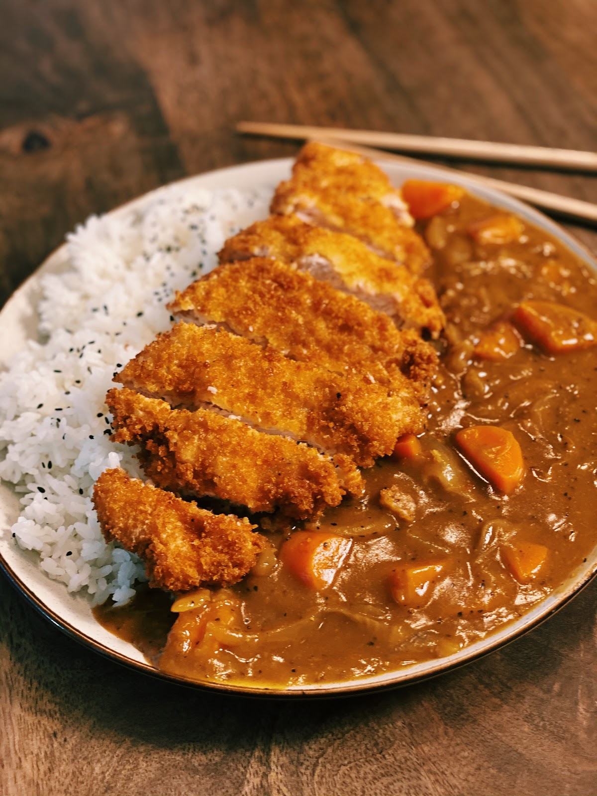

Katsu Curry Recipe

Description
Katsu curry is a popular Japanese comfort food featuring crispy breaded cutlets served with a rich, flavorful curry sauce. It combines the crunchy texture of fried chicken or pork with a smooth, aromatic curry that's typically served over steamed rice.
Perfect for a hearty meal, it balances savory and slightly sweet notes for a satisfying experience.
Ingredients
Katsu:
- 4 boneless chicken breasts or pork loin chops
- Salt and pepper
- 1/2 cup all-purpose flour
- 2 large eggs, beaten
- 1 cup panko breadcrumbs
- Vegetable oil (for frying)
Curry Sauce:
- 1 tablespoon vegetable oil
- 1 large onion, finely chopped
- 2 cloves garlic, minced
- 1 tablespoon fresh ginger, grated
- 2 tablespoons curry powder
- 2 tablespoons all-purpose flour
- 2 cups chicken or vegetable broth
- 1 tablespoon soy sauce
- 1 tablespoon honey or grated apple (optional, for sweetness)
- 1-2 carrots, peeled and diced (optional)
- 1-2 potatoes, peeled and diced (optional)
To Serve:
- Cooked jasmine or short-grain rice
- Sliced scallions or fresh parsley (optional, for garnish)
Steps
Katsu:
- Prepare the Meat:
- Season the chicken breasts or pork chops with salt and pepper.
- Bread the Meat:
- Dredge each piece in flour, dip in beaten eggs, then coat with panko breadcrumbs.
- Fry:
- Heat vegetable oil in a large skillet over medium heat. Fry the breaded meat until golden brown and cooked through, about 5-7 minutes per side. Drain on paper towels.
Curry Sauce:
- Sauté Aromatics:
- Heat vegetable oil in a saucepan over medium heat. Add chopped onion and cook until softened, about 5 minutes. Stir in garlic and ginger, cooking for another minute.
- Add Spices and Flour:
- Stir in curry powder and flour, cooking for 1-2 minutes to toast the spices.
- Make the Sauce:
- Gradually add the broth, stirring constantly to prevent lumps. Add soy sauce and any optional ingredients (carrots, potatoes, honey/apple). Simmer until vegetables are tender and the sauce thickens, about 15-20 minutes.
- Adjust Seasoning:
- Taste and adjust seasoning with additional soy sauce or honey/apple if needed.
To Serve:
- Slice the Katsu:
- Cut the fried katsu into strips.
- Serve:
- Place cooked rice on plates, top with curry sauce, and arrange katsu slices on top. Garnish with scallions or parsley if desired.